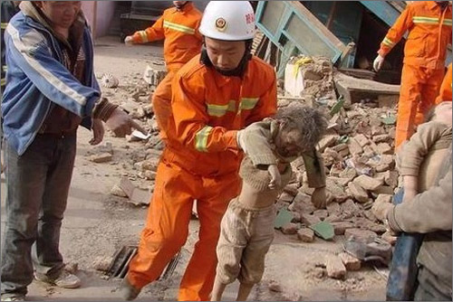

姚明及其基金会携手iTalkBB设立青海地震热线提供免费通讯!
（弗吉尼亚维也纳5月1日）
美国东部时间4月13日傍晚7时49分许，青海省藏族自治州玉树县发生7.1级地震，震源深度33千米。强震之后，当地又连续发生了4.8级、4.3级、 3.8级、6.3级等多次余震。迄今400多人死亡，上万人受伤。身在海外的华人心系灾情，为了帮助海外华人尽快与灾区亲友取得联系，姚明及其基金会携手iTalkBB新电信迅速反应，设立姚明-iTalkBB青海地震热线，为海外华人提供免费通讯服务 直达青海灾区。
"共同成就，我们在一起"姚明基金会携手iTalkBB新电信希望为海外华人提供更好的生活服务。在得知地震灾情后，感同身受。姚明表示："我想向灾区受难的同胞致以最沉重的哀悼。姚明基金会正在筹备为灾区提供帮助。我们很高兴与iTalkBB新电信合作设立免费灾区热线，希望能够帮助海外华人尽快与灾区亲友取得联系。"iTalkBB新电信CEO赵捷指出"我代表iTalkBB，对青海省所有遇难的民众致上最深沉的哀悼。希望我们公司和姚明基金会设立的免费灾区热线，可以帮助所有被这次悲剧所影响到的北美华人，毫无经济负担并能方便地拨打国际长途。让他们与亲友可以保持紧密的联系。"
姚明-iTalkBB青海地震热线拨打方式如下：1. 从任何座机或手机拨打热线接入号：美国用户请拨打718-766-9636；加拿大用户请拨打647-728-7683。2. 接通，听到语音提示后，请输入青海当地座机或手机号码，并以#号键结束。例如：011-86-971-XXXXXXXX+ #
更多信息，欢迎拨打24小时免费服务热线1-877-482-5522，或登录iTalkBB官方网站www.iTalkBB.com。
青海地震：海外华人心系灾情
医务人员检查儿童伤情
从废墟中救出的灰小孩
姚明谈到地震灾区心情沉重
关于iTalkBB：
iTalkBB新电信是享誉全美的优秀通讯品牌，是国际电讯行业的领导和先驱。其以顶级全球网络和前沿技术为依托，以最具竞争力的价格为客户提供高质、清晰的本 地、国内及国际长途电话服务，以及高清中文电视直播、回播与点播服务。其电话业务能完全取代传统家庭电话，并享受多重免费提供的附加功能如来电等待、三方通 话、来电显示、呼叫转移等。另有独一无二的功能——中国大陆、台湾、香港、南韩当地号码，当地亲友只要拨打此号码，就能接通到在美国的亲友，而无需支付国际 长途费用 。iTalkBB的高清中文电视服务，自问世以来便受到了广泛的好评和欢迎。超过五十个热门频道支持实时直播与48小时回看，海量最新电影电视剧综艺节目免 费无限点播，让用户以最低价格尽享华语娱乐。iTalkBB新电信将不断努力，与您共同成就更美好的生活。iTalkBB设有24小时中英文的客户服务热线: 1-877-482- 5522和官方网站www.iTalkBB.com，一年365天提供不间断的服务与更多信息的查询。